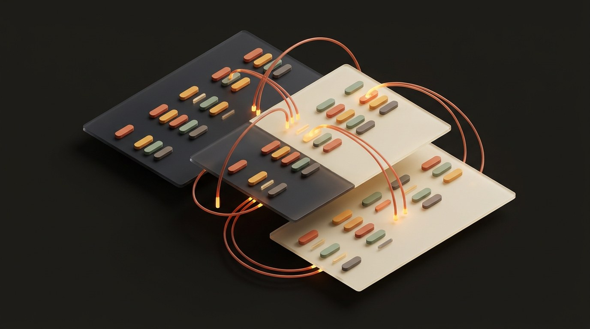

Build autonomous team workspaces in Notion 3.3+ using Custom Agents, 160+ MCP connectors (Slack, Linear, Figma, HubSpot), Notion Mail/Calendar workflows, structured databases, and permission guardrails.
mcp.notion.com/mcp to Claude, Cursor, and VS Code.For a decade, team wikis suffered from a fatal flaw: humans had to manually copy updates from Slack, email, Linear, and Figma into docs—so workspaces rotted within weeks. Notion 3.3+ Custom Agents paired with the Model Context Protocol (MCP) invert this model, turning Notion into an active operational hub that reads events, reasons over structured databases, and executes governed actions 24/7.
Unlike one-off chat prompts that vanish when you close a tab, a Custom Agent runs headless inside your workspace permission boundary. Every autonomous run follows four deterministic stages:
Not every workflow needs an autonomous 24/7 agent. Matching each task to the right Notion AI surface—or external MCP client—keeps your monthly Notion Credit burn predictable while maximizing reliability.
mcp.notion.com/mcp) for Claude/Cursor, but no Custom Agents.Settings → Notion AI → Agents and restrict agent creation to vetted Ops/Lead user groups first.Settings → Notion AI → AI connectors (toggle Enable Custom MCP only if needed).| AI Mode | Plan & Cost | Execution Trigger | Best-Fit Use Cases | When NOT to Use |
|---|---|---|---|---|
| Notion Q&A / Ask Notion | Business / Enterprise (Credits) | Interactive human chat in sidebar or workspace search | Ad-hoc wiki lookup, synthesizing 10 meeting notes, finding who owns a spec. | Recurring daily routines or background Slack/DB triage. |
| Database AI Autofill | Business / Enterprise | Automatic on row creation or property edit | Single-row summaries, sentiment tags, key takeaways, translation columns. | Multi-step reasoning across multiple databases or external MCP writes. |
| Notion 3.3+ Custom Agents | Business / Enterprise (Notion Credits) | Cron schedules, Slack/Mail events, DB changes, @mentions |
24/7 helpdesks, Slack-to-Linear triage, Friday exec digests, inbox routing, wiki audits. | Simple math/rollups (use Formulas) or deep local codebase edits. |
| External MCP Clients (Claude, Cursor, VS Code) |
All Plans (incl. Free via OAuth) | Developer prompt, IDE session, or scheduled Cowork job | Syncing repo PRs to Notion specs, bulk database refactors, writing technical RFCs from code. | Always-on team Slack bots or non-technical ops triggers inside Notion. |
% Complete, format dates, or filter overdue tasks. Offload deterministic logic to native Notion Formulas 2.0 and Rollups, use AI Autofill for single-row summaries, and reserve Custom Agents for cross-tool reasoning, judgment calls, and multi-app MCP orchestration.
Every production Custom Agent is governed by seven core configuration panels. Master these seven controls so your agents stay accurate, scoped, and budget-safe from day one.
#eng-triage + check @Triage-SOP.Linear for matching issue URL before creating.Incidents DB with strict Severity enum (P0–P3).Incidents DB (Read + Write)@Triage-SOP & @Service-Owners (Read Only)search_issues, create_issue)R/W
Slack MCP (read_thread, post_draft)Gated
Figma MCP (get_comments)Read
@mention the agent in the Custom Agent Directory.@SOP pages.Tools & Access, toggle individual MCP tools (e.g., allow search_issues + create_issue while disabling delete_issue).Agent Staging DB and disable external Slack/email writes. Review 10 traces in the Run Log, tighten any ambiguous enum mappings, and only then flip to production.
Custom Agents are only as reliable as the schema beneath them. Messy free-text columns, duplicate trackers, and undocumented properties force agents to guess—driving up hallucinations and Notion Credit consumption.

Initiatives ↔ Tasks ↔ Accounts) via two-way Relations and pre-computed Rollups so Custom Agents read exact state in one tool call instead of crawling 200 child pages.
Status and Select properties (e.g., P0-Blocker, P1-High, P2-Normal) so agents never invent synonyms like “Urgent!”.External ID / Source URL column (Linear ID, Slack Thread TS, HubSpot Deal ID) so agents upsert cleanly with zero duplicates.Open Blockers, % Tasks Done, and Total ARR as Rollups on parent records. Agents read one summary row instead of paginating dozens of sub-pages—cutting credit usage by 40–60%.Verified checkbox + Review By date on wiki/SOP databases and scope agents to Verified = true.Agent Last Sync (Date) and Agent Confidence (Select: High/Needs Review) for fast human triage.| Property Type | Agentic Purpose | Common Anti-Pattern | Production Best Practice |
|---|---|---|---|
Status / Select |
Deterministic workflow state & routing triggers | Free-text “Priority” column with 14 inconsistent spellings | Lock 4–6 canonical options; write definitions in property tooltips |
Relation |
Links Tasks ↔ Projects ↔ Customers ↔ Meetings | Pasting plain-text customer names into every task row | Enforce two-way Relations so agents traverse full entity context |
Rollup / Formula |
Zero-credit math, health scores, SLA countdowns | Asking an agent to count completed items via LLM reasoning | Compute counts/percentages in Notion; let agents interpret deltas |
URL / Unique ID |
Deduplication & cross-app MCP traceability | Creating a new Linear ticket every time a Slack thread updates | Store Linear URL & Slack TS; require lookup before insert |
Vague instructions like “keep our project board updated” produce noisy edits and wasted credits. High-reliability Custom Agents follow a strict five-part specification that separates role, trigger, scope, deterministic actions, and stop rules.
:ticket: or :bug:) instead of triggering on every message in a noisy channel.Last edited by = Agent and check an Agent Synced timestamp before re-running.@Routing-Matrix, @Tone-Guide, and @Escalation-SLA.Notion operates as a bidirectional Model Context Protocol (MCP) hub. Outbound, Custom Agents act as MCP clients talking to 160+ SaaS apps. Inbound, Notion’s hosted MCP server lets external AI coding and chat tools read and update your workspace securely.
In October 2026, Notion scaled Notion AI to 160+ pre-configured MCP connectors (Business/Enterprise). Configure per agent via Agent Settings → Tools & Access → Add connection, authenticate with OAuth, and whitelist only the specific tools required.
Custom MCP Servers: Admins can also enable internal or third-party MCP endpoints under Settings → Notion AI → AI connectors → Enable Custom MCP.
Notion hosts an official Streamable HTTP MCP server at https://mcp.notion.com/mcp with OAuth—available on every Notion plan (including Free). Connect Claude Code, Claude Desktop, Cursor, VS Code Copilot, or ChatGPT in seconds.
Zero-Token-Leak Auth: OAuth inherits the exact Notion permissions of the signed-in user; no shared workspace API keys required.
| Connector | Direction | High-Value MCP Tools | Autonomous Team Hub Workflow |
|---|---|---|---|
| Slack | Outbound | read_channel (public/private), reply_thread, post_message |
Answer FAQ threads from Verified Wiki; capture bug reports & post daily standup digests. |
| Linear | Outbound | search_issues, create_issue, update_status, list_cycles |
Sync PRD specs to Linear epics; pull sprint velocity into Notion Executive Rollups. |
| Figma | Outbound | get_file_summary, list_comments, read_dev_status |
Track design-review sign-offs and flag unresolved Figma comments inside Feature Specs DB. |
| HubSpot | Outbound | search_deals, get_company, log_note, list_tickets |
Enrich Notion Account Hubs with live ARR/stage data; trigger deal-desk briefs on stage change. |
| GitHub | Outbound | list_prs, get_release_notes, search_issues |
Generate customer-ready release notes in Notion automatically when a release tag ships. |
| Notion Hosted MCP | Inbound | notion-search, fetch, create-pages, update-page |
Claude Code / Cursor reads live Notion PRDs & writes architecture docs directly from your IDE. |
# Add Notion's official hosted Streamable HTTP MCP server
claude mcp add --transport http notion https://mcp.notion.com/mcp
# Authenticate in browser (inherits your exact Notion ACLs)
/mcp # Select 'notion' -> Complete OAuth sign-in.mcp.json Team Config){
"mcpServers": {
"notion": {
"url": "https://mcp.notion.com/mcp"
}
}
}mcp.notion.com/mcp server converts pages into clean Markdown and runs semantic search across your workspace and connected apps—using far fewer context tokens than raw Notion REST block JSON while honoring per-user OAuth permissions.
Email and calendar scheduling are the biggest hidden tax on product and ops teams. By wiring Mail and Notion Calendar directly into Custom Agents, incoming requests flow straight into structured databases—with drafts waiting for one-click human approval.
Accounts DB (via Notion or HubSpot MCP) to tag VIP customers, vendors, or recruiting leads automatically.Team Inbox DB with a direct link to the source email thread.Sprint Tasks DB due dates against open calendar slots and propose deep-work holds when high-priority deliverables are at risk.Deploy these five battle-tested Custom Agents in under 15 minutes each. Every recipe pairs a scoped Notion database with least-privilege MCP connectors and an explicit skip rule.
| Agent Recipe | Trigger & MCP Tools | Target Notion Schema | Core Instruction Logic |
|---|---|---|---|
| 1. Slack-to-Linear Bug Router | Slack :bug: reactionSlack + Linear MCP |
Incidents DB (Severity, Squad, Linear URL, Slack TS) |
Search Linear for duplicates; if none, create issue, upsert Notion row, and reply in Slack thread with ticket link. |
| 2. Design-to-Dev Spec Sync | Tue/Thu 09:00 CronFigma + Linear MCP |
Feature Specs DB (Design Status, Open Comments, PRD Link) |
Read Figma dev-ready status & unresolved comments; update Notion Spec status and flag blockers to the PM. |
| 3. Deal Desk & Account Brief | HubSpot stage → EvalHubSpot + Mail + Calendar |
Accounts DB (ARR, Stage, Champion, Risks, Next Call) |
Synthesize last 5 emails, HubSpot notes, and open support tickets into a 1-page pre-call brief 30m before meetings. |
| 4. Internal Ops & IT Helpdesk | Slack #ask-ops postSlack MCP (public/private) |
Verified Wiki (Read Only) + IT Tickets DB |
Answer strictly from Verified = true SOPs with page links; if no SOP matches, log an IT ticket and tag Ops on-call. |
| 5. Friday Exec Ship Digest | Fri 15:00 CronLinear + GitHub + Slack |
Leadership Digest DB + Initiatives Rollups |
Pull completed Linear issues, merged release PRs, and at-risk Notion milestones into a 5-bullet exec summary draft. |
ROLE: Product Bug Triage Router.
TRIGGER: Slack :bug: reaction in #eng-triage or #support-esc.
SKIP IF: Thread already links linear.app OR sender is a bot.
STEPS:
1. Read thread + @Severity-SOP (Read Only).
2. Call linear.search_issues(query=error_code_or_title).
3. If no match, call linear.create_issue(team="CORE",
priority=mapped_enum, description=repro + slack_url).
4. Upsert Incidents DB: Title, Severity, Linear URL, Slack TS.
5. Reply in thread with Linear link + assigned squad.
GUARDRAIL: Never assign P0 without tagging @oncall-lead.ROLE: Revenue Intelligence Analyst.
TRIGGER: 30 mins before external Notion Calendar event
with attendee matching Accounts DB domain.
SKIP IF: Internal-only call OR brief updated <24h ago.
STEPS:
1. Fetch HubSpot deal stage, ARR, and last 3 call notes.
2. Pull recent Gmail/Outlook threads with attendees.
3. Check Incidents DB for open P0/P1 bugs tied to Account.
4. Create child page under Accounts DB: "YYYY-MM-DD Brief"
with sections: Deal Context, Open Risks, 3 Questions.
GUARDRAIL: Read-only on HubSpot & Mail; never send emails.An autonomous agent running 24/7 across Slack, email, and databases is a force multiplier—unless poor permissions leak confidential HR docs or runaway triggers drain your monthly credits. Build governance into every agent before launch.
Settings → Notion AI → Agents, restrict who can publish workspace-wide agents by individual or user group.| Governance Control | Business Plan | Enterprise Plan | Recommended Team Standard |
|---|---|---|---|
| Agent Creation ACLs | Admin toggle by user/group | Granular group + RBAC policies | Allow Builders group to publish; all others request via Ops |
| Notion Credit Limits | Per-agent limits + alerts | Per-agent + workspace hard cap | Cap new agents at 500–1,000 credits/mo during pilot |
| Custom MCP Servers | Admin-gated toggle | Admin-gated + domain/audit controls | Whitelist approved internal MCP endpoints only |
| Audit & Activity Logs | Agent Run Log + Credits view | Full Audit Log + SIEM export | Weekly trace review on all write-enabled agents |
Verified Wiki DB for pages untouched for >90 days, check for broken Linear/Figma links, flag near-duplicate titles, and DM each page owner in Slack with a 2-click Re-Verify or Archive prompt. Clean knowledge = accurate agents.
The highest-leverage Notion hubs chain capture tools, structured databases, and MCP connectors into a single closed loop—eliminating status meetings and manual copy-pasting across Product, Engineering, Design, and Leadership.
Record syncs with Granola or Notion AI Meeting Notes. When a note lands in Meetings DB with Status = Complete, the Synthesis Agent wakes up automatically—no manual copy-paste required.
The agent logs key decisions into Decisions DB, opens deduplicated Linear issues via MCP, attaches relevant Figma frames, and posts a concise 3-bullet recap in the squad’s Slack channel.
Engineers pull the linked Notion spec directly inside Claude Code / Cursor via mcp.notion.com/mcp. On Friday at 15:00, the Exec Digest Agent compiles Rollups + shipped GitHub PRs into one leadership page.
| Workflow Metric | Manual Baseline | With Notion Agent + MCP Hub | Primary Guardrail |
|---|---|---|---|
| Meeting-to-Ticket Latency | 24–72 hours (often dropped) | < 5 minutes post-call | Linear duplicate lookup |
| Weekly Status Report Prep | 3–5 hrs/wk across PMs | 15 min human review of draft | Rollup-only metrics |
| Internal Slack Ops Q&A | 15–20 hrs/wk interrupt load | 60–75% auto-deflected w/ citations | Verified = true scope |
When a Custom Agent misbehaves, the root cause is almost always schema ambiguity, an unguarded trigger loop, or a missing OAuth scope—not model intelligence. Diagnose and fix the top seven failure modes fast:
| Symptom | Root Cause | Fast Fix |
|---|---|---|
| 1. Hallucinated property values | Free-text columns or missing property descriptions | Convert to strict Select/Status enums and write explicit definitions in each column’s info tooltip. |
| 2. Runaway Notion Credit burn | Event feedback loop (Agent edits page → re-triggers itself) | Add loop guard (Last edited by != Agent), batch non-urgent jobs to cron, and lock a per-agent credit cap. |
| 3. MCP 401 / Permission Denied | Expired OAuth token or Admin Custom MCP toggle off | Re-authenticate under Tools & Access and verify Enable Custom MCP in Admin AI Connectors settings. |
| 4. Blind to private Slack threads | Notion bot not invited to private channel or out of scope | Run /invite @Notion inside the private Slack channel and whitelist it in the agent’s trigger config. |
| 5. Duplicate Linear tickets | No idempotency lookup before calling create_issue |
Require search by External ID or Slack TS first; store the returned Linear URL in Notion immediately. |
| 6. Claude/Cursor can’t find page | Signed-in OAuth user lacks access to that Notion page | Share the target DB/page with the user’s Notion account; mcp.notion.com/mcp strictly mirrors user ACLs. |
| 7. Contradictory SOP answers | Archived or duplicate wiki docs still inside agent scope | Restrict agent knowledge to a Verified = true view and activate the monthly 90-Day Wiki Librarian Agent. |
Status/Select enums, property tooltips, and a unique External ID key.